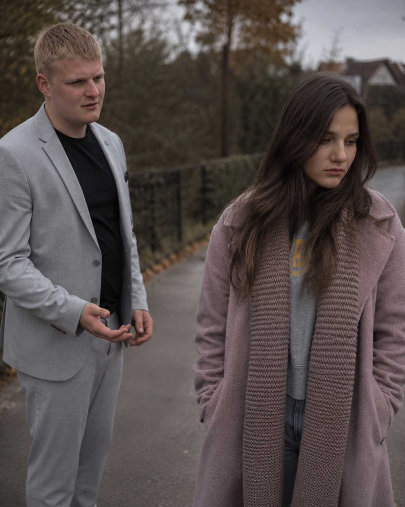
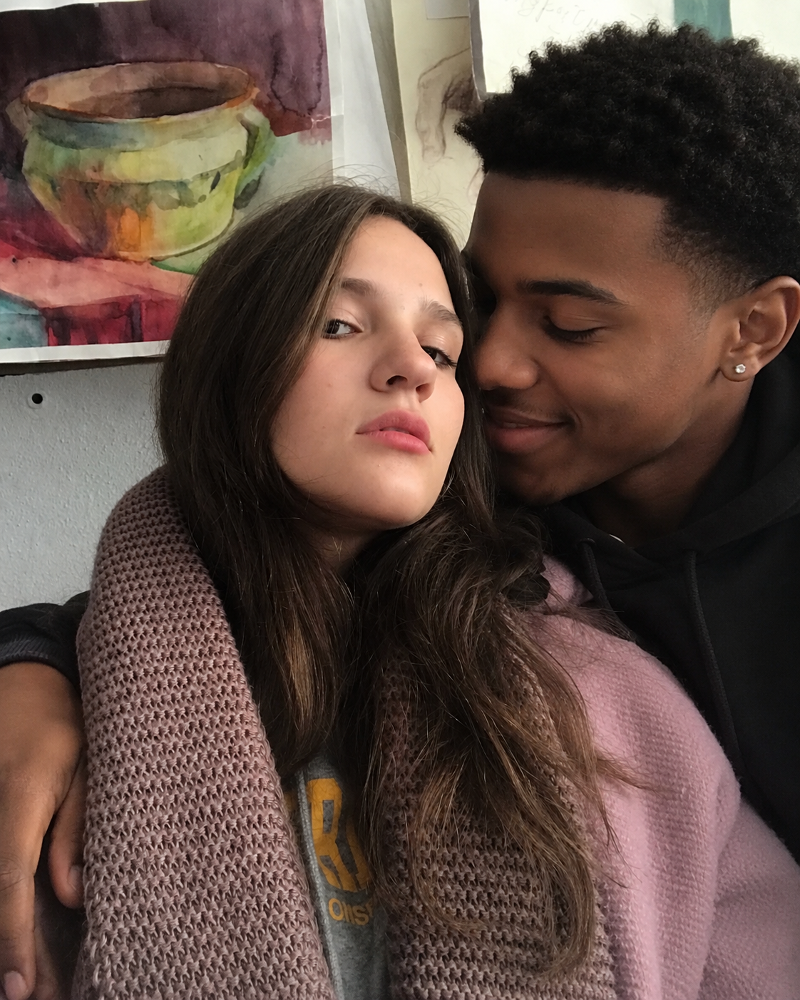

Іноді найкрасивіші історії мають найтемніший фінал...
Колись ця історія починалася зі світла. Але не кожне світло горить вічно.

Діма помічав дрібниці: холодні відповіді, порожній погляд, тишу там, де раніше було тепло. Повідомлення без відповіді, порожні вечори, мовчазні стіни кімнати, що колись світилася сміхом. Історія почала тріщати по швах, непомітно, але безповоротно.

У її житті з’явився інший. Новий чоловік, афроамериканець, приніс із собою нові розмови, нові таємниці та нові почуття, які більше не належали Дімі. Це не було жартом — це став холодний, невідворотний поворот долі, який назавжди розірвав зв'язок Діми та Ані.
Діма дізнався правду. Зрада була тихою, але оглушливою. В один момент усі клятви, весільні мрії та спільні спогади перетворилися на порох під холодним дощем розчарування. Тепер замість тепла залишилася тільки порожнеча та розбите серце.
Весільні дзвони знову пролунали. Але цього разу не для Діми. Аня вийшла заміж за нового обранця у тому ж залі, проте атмосфера змінилася: замість ніжності та світла панувала холодна, строга краса та велич нового вибору.
Після цього почалося абсолютно нове життя. Інша сім’я, інший дім. Сім маленьких дитячих голосів наповнили коридори нового будинку Ані. І поки Діма залишився у спогадах, її нова життєва реальність стала зовсім іншою, великою та гамірною.
А Діма залишився там, де все починалося — серед спогадів, які вже нікому не були потрібні. Він стоїть під дощем минулого, розуміючи: іноді найкрасивіші історії кохання мають найтемніший і найхолодніший фінал.
А Діма залишився там, де все починалося — серед спогадів, які вже нікому не були потрібні. Він стоїть під дощем минулого, розуміючи: іноді найкрасивіші історії кохання мають найтемніший і найхолодніший фінал.
Сім дитячих голосів, нескінченний рух та щирий дитячий сміх. Нове життя Ані сповнене хаосу, радості та галасливих криків «Акуна Матата», які тепер наповнюють її дім щодня.